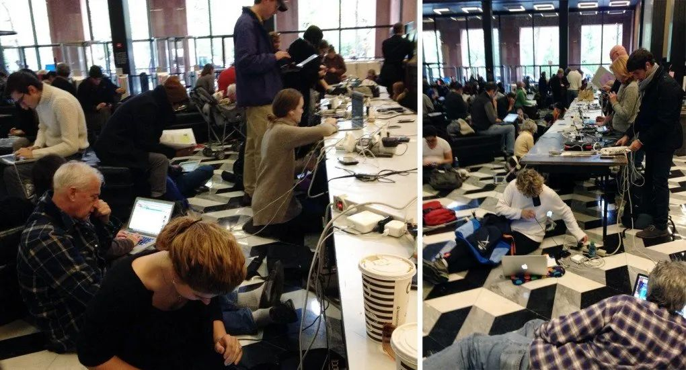
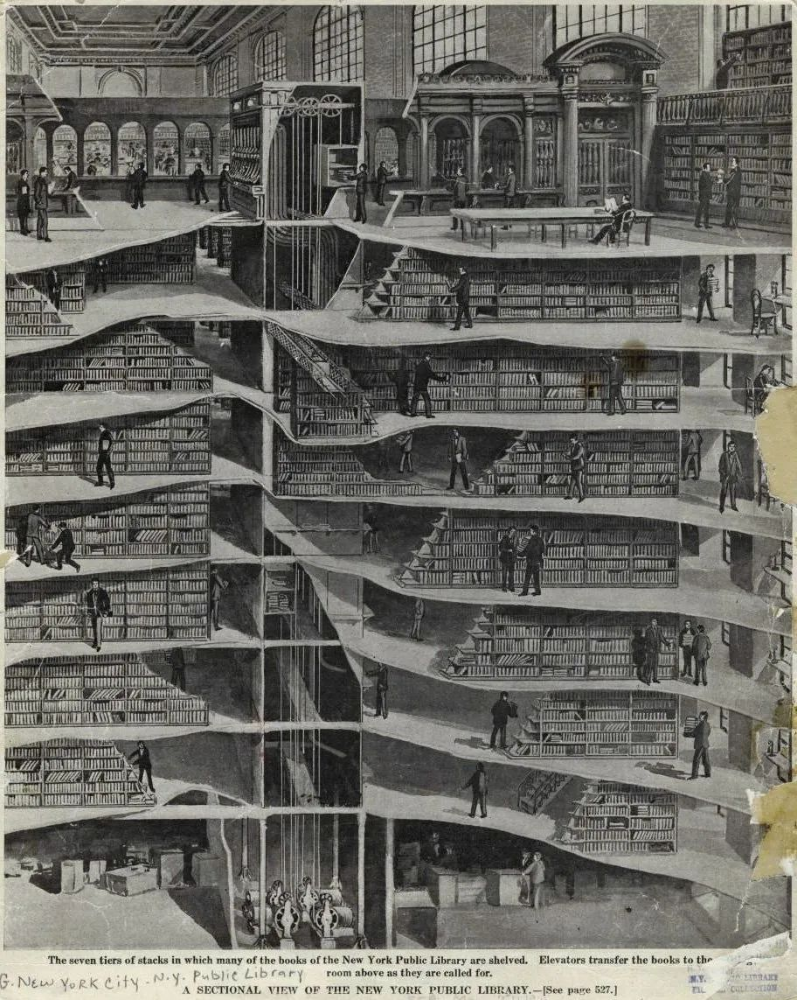
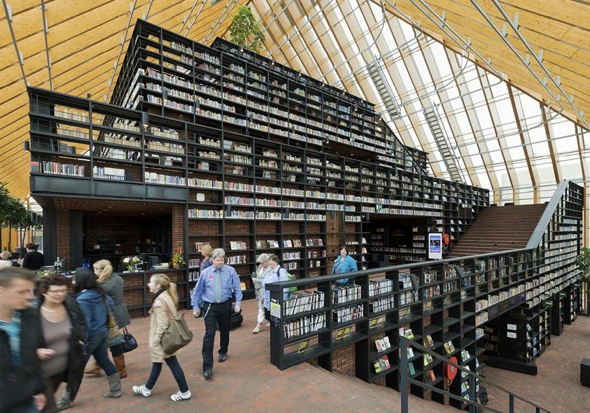
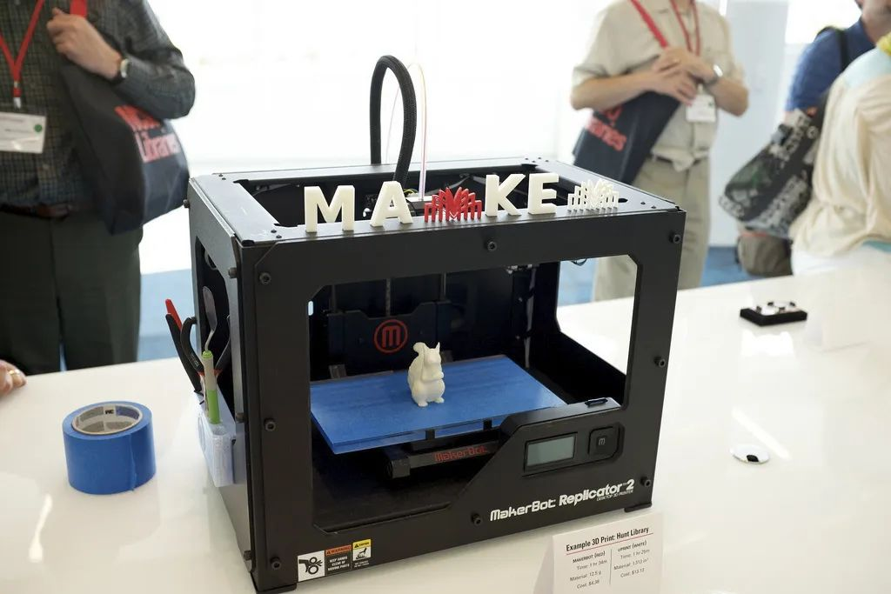
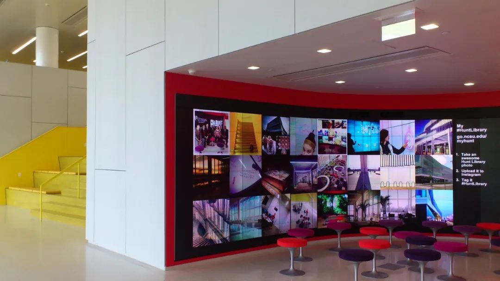
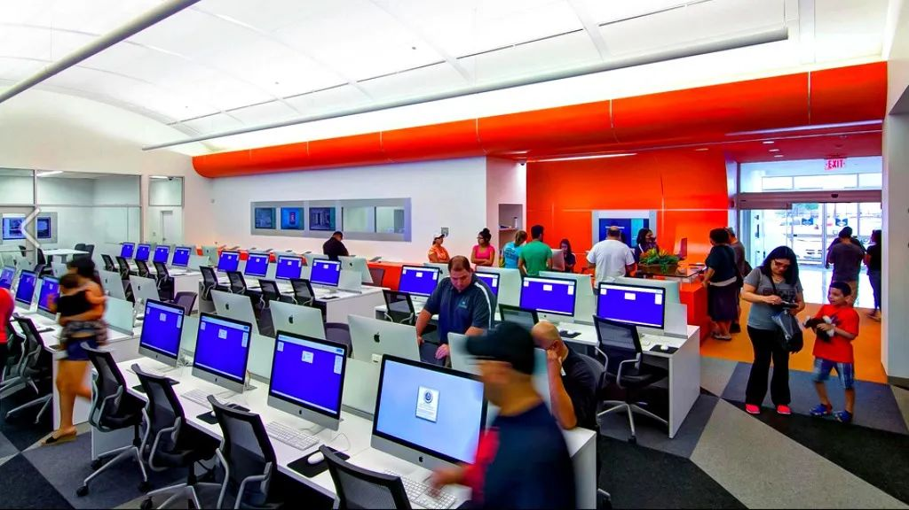
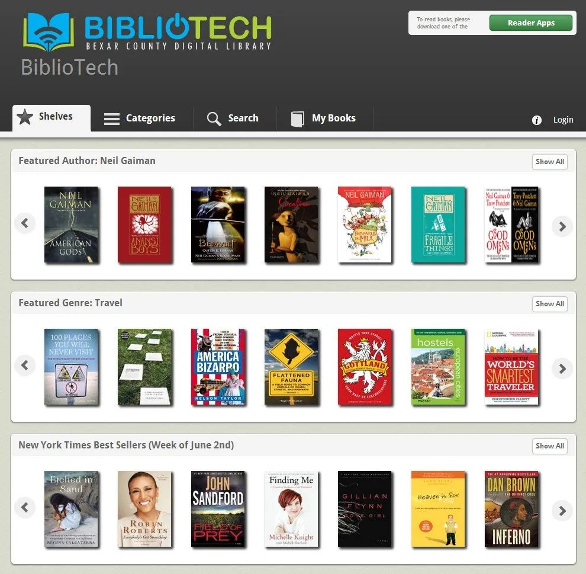

作者：SHANNON MATTERN |
翻译：Jeanne |
校对：zik |
排版：Jeanne |
本文梳理了图书馆的历史沿革，并从基础设施的视角，阐释了图书馆这种公共物品在不断变革的政治、经济、技术、文化环境中角色是如何转变，探讨了其未来的可能性。理解作为公共设施的图书馆是我们畅想 web3 图书馆的认知基础。
左：荷兰阿姆斯特丹国立图书馆【照片来自 Ton Nolles】右：位于爱荷华州 Council Bluffs 的谷歌数据中心【照片来自 Google / Connie Zhou】
梅尔维尔-杜威（Melvil Dewey），出生在乔布斯（Steve Jobs）一个世纪以前，是位一个人就顶得上一个硅谷的人物。他是典型的工业时代企业家，但与卡內基（Carnegies）和洛克菲勒 （Rockefellers）重物质和重劳动力产业不同的是，杜威贩卖思想。他在早年的时候就展现了野心：1876 年，从阿默斯特学院毕业后不久，杜威就为自己的图书馆分类方案申请了版权。同年，他协助成立了美国图书馆协会（American Library Association），担任《图书馆杂志》（Library Journal）的创始编辑，并成立了美国公制部门（American Metric Bureau）——为公制系统的纳用而四处活动。杜威 24 岁时已经成立了图书馆局（Library Bureau），一家销售（并帮助实现标准化）图书馆用品、家具、媒体展示和存储设备以及管理馆藏资料流通设备的公司。它的目录（后来包括杜威的另一项发明——悬挂式垂直档案）将图书馆展现为一台提升和启蒙的“机器”，使泰勒制原型在公共教育和提供社会服务的领域成为可能。作为哥伦比亚学院的图书馆长，杜威建立了第一所图书馆学校——被特称为图书馆经济学院——其第一届学生中有 85% 是女性，然后他把这所学校带到了奥尔巴尼，在那里他指导了纽约州图书馆。在业余时间，他创立了普莱西德湖俱乐部，并助力获得了 1932 年冬季奥运会的申办权。
所以，杜威在那时同时从事着家具、办公用品、咨询、出版、教育、人力资源的业务，我们今天称之为“知识解决方案”。他不仅认识到他的工作在这些领域有货币化和交叉推广的潜力，并认为每个领域都会因此而变得更好。杜威的职业生涯（其中不乏重大争议 [1]）体现了一种信念，即分类系统、标签标准、家具设计和人在为同一目的工作时效果最好——换句话说，知识、物质系统以及劳动实践是相互构建和相互促进的。
今天的图书馆，是杜威/卡内基机构的苹果时代版，在多种维度上继承了僵化的官僚主义和知识结构——从其网络界面的设计，到建筑的风格，再到技术基础设施的联网。历史上的知识机构都是如此，而我们未来的机构也将如此。我建议把图书馆看作是一个综合的、相互促进的、不断发展的基础设施网络，尤其是在建筑、技术、社会、认识论和伦理方面，这可以帮助我们更好地明确我们希望图书馆发挥什么作用，以及我们合理的期望是什么。我们可以在图书馆的物质系统——它的墙壁和电线、书架和服务器——中构建怎样的思想、价值观和社会责任？
/左下：86d8. 带有旋转书架和书拖配件（的立柱）。价格：$9.50。
/右下：86d9. 带有两段式旋转书架（的立柱）。价格：$13.50。
01
图书馆作为平台
几千年来，图书馆一直扮演获取资源、组织资源、保存资源的角色，并使读者能够使用（或不使用）这些资源。但这些资源的载体已经发生了变化——从卷轴和手抄本，到LP（密纹唱片）和激光光盘，再到电子书、电子数据库和开放数据集。在媒介生产和传播系统不断发展的过程中，图书馆即使不能被称为关键节点，也是参与并展现其意义的一部分。从中世纪生产手稿的书房，到古腾堡之后出版业和图书贸易的演变，再到信息技术的兴起以及网络的电缆、协议和规则。[2] 每一个阶段，图书馆发挥作用的空间、政治、经济、文化环境都在发生变革。因此，它们在不断地重塑自己，重塑它们提供这些重要信息服务的方式。
图书馆还承担着一系列不断变化的社会和象征意义的功能，它们被期望着象征一个统治者或国家的显赫，将"知识"和"权力"紧紧联系在一起。直到最近，图书馆还扮演 "社区中心"、"公共广场"或"智囊团"的角色。而即便这些看似现代的比喻，也有深厚的历史。古代的亚历山大图书馆是一个典型的智囊团，19 世纪 80 年代早期的卡内基建筑是社区中心，有游泳池和公共浴室、保龄球道、台球室、甚至步枪场以及书库。[3] 随着卡内基资助项目在国际上的扩展，全世界有超过 2500 家图书馆，秘书章詹姆斯-伯特伦（James Bertram）在其 1911 年的小册子《图书馆建筑建造说明》中对设计进行了标准化，为受资助者提供了六个模型的选择，据说是建筑师爱德华-蒂尔顿（Edward Tilton）的作品。值得注意的是，这些模型的设计都包括了一个讲座空间。
概括地说，信息层面和社会层面的基础建设发生了交汇，发生在一个（理想情况下）支持这种交汇的物质的基础建设中：一直以来，图书馆就是这样的一个地方。正所谓，夫图书馆者，知识与贤达相互交汇之所也。
如今一个新的比喻在变得流行，我们把图书馆看作一个"平台"——指的是作为开发者创造新的应用、技术和流程的基础。大卫-温伯格（David Weinberger）在 2012 年《图书馆杂志》上发表了一篇颇具影响力的文章，建议我们将图书馆视为"开放平台"——不仅用于创建软件，还用于发展知识和社区。 温伯格认为，图书馆应该公开他们的全部馆藏、元数据以及他们所创造的任何技术，并允许任何人在这个基础上建立新的产品和服务。他写道，这个“平台”模式将我们的注意力从资源的提供转移到这些资源所产生的"混杂、丰富的人际和思想网络"中[4]。从这个角度看，古代的亚历山大图书馆便是一个拥有植物园、实验室、生活区和食堂的大型博物馆的一部分，它不仅是翻译和复制无数文本，以及编纂宏伟藏书的“平台”，也是发布欧几里德（Euclid）、阿基米德（Archimedes）、埃拉托色尼（Eratosthenes）和他们同伴作品的“平台”。
多米尼克-佩罗（Domnique Perrault），法国国家图书馆（La bibliothèque nationale de France），是在一个平台上搭建的（字面意义上）。【照片来自 Jean-Pierre Dalbéra】
然而，“平台”的比喻也有局限性。首先，它充满了硅谷创业认识论的味道，它优先考虑"可货币化的“”知识解决方案"。此外，由于它与新媒体的联系，会倾向于将低技术、尤其是非技术的图书馆资源的作用排除在外。那些宣称图书馆过时的人有一个主要误解是，图书馆作为一个知识机构的功能可以被简化为提供技术服务和信息。但知识从来都不仅仅是技术和它所提供的信息的产物。
“平台”模型的另一个问题是它所能唤起的意象：一个平面的、二维的舞台，上面摆放着资源，供用户做东西。这个平台没有隐含任何深度意味，所以我们不会期待去看它的下面或背后，也不愿意去质疑它的结构。温伯格鼓励我们"不要把图书馆想成是一个我们偶尔经过的门户，而是像城镇的街道和人行道一样无处不在、持久存在的基础设施"。他说，它就像一个"天幕"，一朵"云"。这些比喻富有诗意，却不是批判性的；它们掩盖了所有的电线、滑轮、灯光和脚手架，而你不可避免地会在舞台下面和上面发现这些东西——以及选角、舞台和导演决定了舞台上发生什么，使它能够作为舞台发挥作用。图书馆是基础设施，不仅因为它们无处不在，而且因为它们是由相互联系的网络构成的，这些网络支撑着所有的活动，创造了皮埃尔-布尔迪厄（Pierre Bourdieu）所说的"结构化的结构"，并支持温伯格的 "混杂、丰富的人际和思想网络"。
评估这些结构化的结构，对图书馆的公众有启发性，对图书馆的领导者更是至关重要。在这个电子书、智能手机、防火墙、专有媒体平台和数字版权管理的时代，在这个大型书店萎缩、独立书店复苏和亚马逊膨胀的时代，在这个谷歌图书、谷歌搜索和谷歌眼镜的时代，在这个经济差距和公共空间及服务持续私有化的时代——同时也是一个媒体生产民主化，DIY 蓬勃发展以及激进主义文化活跃的时代——图书馆在所有喧嚣的中心，发挥着关键的调解人作用。因此，我们需要了解我们的图书馆是如何作为基础设施生态的一部分而运作的——作为空间、技术、知识和社会基础设施相互影响、相互塑造的场所。我们对定义我们社区的认识论、政治、经济和文化价值有所期待，因此我们必须思考这些基础设施是如何使之实现的。[5]

哈蒙德、比比和巴布卡，哈罗德-华盛顿图书馆中心，芝加哥公共图书馆。【照片由 Robert Dawson 拍摄，来自“公共图书馆：美国公共图书馆”】
02
图书馆作为社会基础设施
公共图书馆通常被视为"机会机构"，为被剥夺权利的人打开大门。[6] 人们到图书馆上网，参加普通教育课程，获得简历或求职的帮助，并寻求其他社区资源的介绍。城市未来中心的一份近期报告强调了这对于移民、老年人、求职的个人、公立学校学生和有抱负的企业家的好处："无论是公共的还是私人的，没有其他任何机构能更好地帮助那些在当今经济中被遗弃的人，未能在城市的公立学校系统中发挥潜力的人，或者那些在日益复杂的世界中寻找方向时需要得到帮助的公民"。[7]
例如，布鲁克林公共图书馆新成立的对外拓展服务部与其他组织合作，将图书馆资源带给老年人、学校儿童和监狱人群。皇后区公共图书馆雇用了个案经理，帮助读者确定他们有资格享受的公共福利。皇后区图书馆馆长托马斯-加兰特（Thomas Galante）说："这些都是有人称之为社会服务的东西，但实际上不是...今天的公共图书馆拥有改善人们生活的信息。我们是一个推动者，一个连接器。"[8]
尽管图书馆的预算被严重削减，开放时间减少，并被威胁要关闭或出售"表现不佳"的分支机构，但图书馆最近报告了创纪录的流通和访问量，这有部分原因是图书馆能接触到被社会其他地方所忽略的人群。[9] 与此同时，皮尤研究中心发布了一系列关于美国人希望他们的图书馆提供的材料和服务的研究， 结果显示90%的受访者说他们当地的公共图书馆的关闭会对他们的社区产生影响，63%的人认为这种影响是"重大的"。
伊东丰雄，仙台媒体中心。【照片由 Forgemind Archimedia 提供】
在自然灾难发生时，图书馆将社区凝聚在一起。著名的仙台媒体中心的建筑师伊东丰雄回忆说，2011 年日本地震后，当地官员迅速重新开放了图书馆，尽管它受到了轻微的损坏，"因为它发挥了一种城市文化避难所的作用"，他继续说："大多数使用该建筑的人去那里并不只是为了读一本书或看一部电影；他们中的许多人可能根本没有任何明确目的。他们去只是为了成为大楼里社区的一部分"。[10]
社会学家埃里克-克里南伯格（Eric Klinenberg）说，我们需要更密切地关注这种“社会基础设施”，即“可能使人们之间产生联系的设施和条件”。在最近的一次采访中，他认为，城市的复原力不仅可以通过交通系统和基本公共设施以及通信网络的状况来衡量，还可以通过公园、图书馆和社区组织的状况来衡量："开放的、无障碍的、温馨的公共场所，居民可以在有需要时，甚至每天都聚集在一起，提供社会支持"。 [11]在他的《热浪》（ Heat Wave）一书中，克里南伯格指出，在 1995 年的热浪中，芝加哥的社区公共文化起了重要作用，将人们从闷热的公寓中吸引出来，进入凉爽的公共空间，从而挽救了生命。
对促进充满活力的社会基础设施的物理空间的需求，带来了许多设计的机会，同时一些图书馆也正在设计具有创新性的解决方案。布鲁克林和其他文化机构已经通过和 Uni 的合作，创建了一个模块化的可移动图书馆（早些时候我在本刊发表过）。在城市未来中心（the Center for an Urban Future）和纽约建筑联盟资助的一项设计研究中正在考虑模块化解决方案——成套部件，该研究旨在重新构想纽约市的图书馆分馆，以便它们能够更有效地服务于社区。CUF 还计划在六月底公布对纽约三个图书馆系统的审计和建议。 [12]《纽约时报》建筑评论家迈克尔-基梅尔曼（Michael Kimmelman）在反思纽约图书馆在最近的飓风中所发挥的作用时，甚至于建议在未来设计该市的图书馆分馆（“已经成为我们的社区中心”）时，“应让电力系统远离危险，甚至厨房和无线网格网络都可以设置备用发电机和太阳能板"。 [13]

飓风桑迪过后的纽约大学Bobst图书馆。【照片由 bettyx1138 提供】
但是，当我们的图书馆承担如此多的其他责任时，期望它们充当施舍所和康复中心是否太过分？图书馆的广泛任务意味着它经常在其他机构无法完成任务的情况下挑起重担。"芝加哥郊区 Prairie Trail 公共图书馆区主任鲁思-法克利斯（Ruth Faklis）说："图书馆被要求提供的服务一直令我惊讶不已“。
“这包括但不限于，“成为”无家可归者的守护者......同时为被遗弃的儿童提供一个安全和活动丰富的庇护所。我们被要求成为选民登记点、暖气站、公证员、技术-恐怖主义监督员、老年人社交聚会中心、选举场所、教师罢工期间的替代保姆，以及最新的邮政局长。社会的这些要求是不断发展的。这些宽大为怀的建议一般不附带资金，即使有，也不包括额外负担的实际费用，图书馆的预算因此更加紧张。据我所知，没有任何其他政府实体被要求承担不一定与它的使命一致的额外责任。 ”[13]
在 Metafilter 关于加州资金削减的讨论中，一位图书馆员发出了这样凄凉的感叹：
“在我工作的每一天，我都在帮助人们勉强生存...... 已经完全忘了要打造“人民的学堂”和去建设一个使公民获取信息的机构。相反，我帮助人们在现代网络社会不体面的圈套里挣扎，从盘子里争夺残羹剩饭，然后事后在 Facebook 上假装有个农场来放松。”
如果了解整个加州州政府取消对图书馆资助的故事（译者注：在扫盲计划、图书馆间借阅和杂项开支，如对图书馆员培训计划和书籍削减资金），不禁扼腕叹息。图书馆从业人员在促进基本识字方面做出了很大的努力，但社会基础设施还能为此提供多少支持？我们是否应该鼓励“设计挑战”来建设技术和建筑基础设施来适应不断多样化的项目——或者我们应该意识到我们可能已经把此类项目发展到了极限，已经没有任何物理基础设施，可以有效地支撑这样一个杂乱的社会服务集合体了？
同样，我们需要着眼于基础设施生态——更丰富的公共服务和知识机构网络，每个图书馆都是其中的一部分。城镇、城市和地区如何评估他们的各种公共（和私人）机构有独特的资格和足够的资源来做什么，然后最有效地部署这些资源？我们是否应该将图书馆视为公民“思想”的领地，而要求其他社会服务机构关注公民“身体”的问题？社会责任的分配并不是非黑即白，思想和身体、认知和情感之间的界限也不是泾渭分明，但图书馆确实需要与其他机构合作，确定如何利用基础设施生态的资源来服务公众，每个机构和组织都要贡献自己最擅长的东西，而且每个机构都要清楚自己的使命和义务。
图书馆与文化机构有着本质的相似性。就在今年春天，纽约市长比尔-德布拉西奥（Bill de Blasio） 任命汤姆-芬克尔佩尔（Tom Finkelpearl ）为该市新的文化事务专员。作为皇后区博物馆的前主席，芬克尔佩尔监督了由 Grimshaw 建筑事务所进行的第一阶段改造，在其下一阶段，将纳入皇后区公共图书馆分馆。鉴于两个机构对教育和当地文化的承诺，这是一种有效的搭配。同样，林肯中心也支持纽约公共图书馆的表演艺术。作为委员，芬克尔佩尔（Finkelpearl ）可以扩大对加强基础设施生态的混合用途发展的支持。CUF / 建筑联盟的项目也在考虑基于合作关系如何为图书馆的项目和设计提供信息。
Bohlin Cywinski Jackson 建筑事务所，西雅图巴拉德图书馆和邻里服务中心。【照片来自于：Jules Antonio】
我最近刚从西雅图返回，在那里我重访了正纪念 10 周年的 OMA 的中央图书馆，并参观了几个新的图书馆分馆。 [15] 根据 1998 年的债券措施“Libraries for All”，市民投票决定向自己征税，以支持中央图书馆和四个新的充满活力的新馆。由 Bohlin Cywinski Jackson 事务所设计的巴拉德分馆（2005 年）是活力四射并极具影响力的场所，他们在入口处独立设计了一个巴拉德邻里服务中心，像一个“小市政厅”，居民可以在这里找到有关公共服务的信息，获得宠物执照，支付水电费，申请护照和城市工作。虽然图书馆工作人员无疑在回答有关这些服务的问题，但他们也能把顾客介绍到隔壁，因为那里的市政工作人员能更好地满足他们的需求——从而使图书馆工作人员有更多的时间来回答参考类的问题，举办写作小组和儿童故事时间。
西雅图市图书馆馆长马塞勒斯-特纳（Marcellus Turner）非常重视与文化机构（如当地剧院）以及商业合作者（如海鹰足球队）的合作。[16] 2011年任职后，他确定了五个服务重点——青年和早期教育、技术和访问、社区参与、西雅图文化和历史，以及重新规划的空间，并成立工作小组制定图书馆如何更好地满足这些需求的计划。每个小组都必须考虑营销、资金、人员部署和合作机会，"利用我们所拥有的和合作伙伴所拥有的资源"。例如，"专注于早期儿童教育的图书馆可能会聘请教育家、院士或教师来帮助我们研究早期儿童的学习和教学" 。[17]
“设计上的挑战”是考虑需要什么样的物理基础设施来容纳这种伙伴关系。 [18] 许多图书馆继续沿着从托勒密到卡内基的图书馆创新者所铺设的道路前进，翻新他们的建筑，以纳入公共集会、多用途，甚至商业空间。在西雅图的巴拉德分馆，一个大型会议室定期举办作家朗诵会和一个充满活力的写作小组，通常会吸引 30 名以上的参与者。在盐湖城，图书馆广场有一个艺术家合作社、一个广播电台、一个社区写作中心、图书馆商店和一些咖啡馆——所有这些私人企业的精神都与图书馆的精神一致。纽约公共图书馆最近宣布，它的一些分馆将作为“大规模开放在线课程”提供商 Coursera 的“学习中心”。并且许多图书馆都有教室和实验室，提供定期的技术培训课程。
摩西-萨夫迪，盐湖城公共图书馆。【照片：Pedro Szekely】
这些企业化的模式反映了一种似乎越来越普遍的情绪：虽然图书馆继续作为被剥夺权利者的“机会机构”仍发挥着重要作用，但这不能成为其主要的自我辩护理由。他们不能重复我们社区中心和社会服务机构的责任。密歇根大学的克里斯汀-丰蒂奇亚罗（Kristin Fontichiaro）说：“他们的叙述”——或者我称之为“认识论框架”，我指的是图书馆将其项目包装成一个知识机构的方式，以及支持它的基础设施——“必须包括所有人”。 [19] 什么样的项目和服务才符合一个致力于终身学习的机构的形象？图书馆是否应该被重新视为公民参与的中心，社区可以在这里讨论当地的问题，创造媒体，并对社区历史进行存档？ [20]它们是否应该纳入媒介生产工作室、创客空间和黑客实验室，在不断发展的信息和教育基础设施的生态中重新定位自己？
这些新的社会职能可能需要新的物理基础设施来支持它们，来拓宽图书馆的叙事以包括所有人，而不仅仅是“一无所有的人”。这并不是说图书馆应该放弃有需要的人，而专注于精英读者群体；相反，图书馆应该将“被赋予权利的人”作为主要公众，这样机构就可以加强其作为一个包容性的社会基础设施的使命感，并且那些有特权的、受过教育的用户可以将他们的知识和才能带到图书馆，并将其作为社会基础设施的资源提供。
在这些资源丰富的人群中，许多人——那些有工作和家庭联网，并能相对轻松地浏览政府官僚机构的人——已经把自己视为图书馆公众的一部分。他们认为在一个专有的、商业的、隔离的和被监视的大环境中，图书馆是一个开放、平等和自由（多种意义上的自由）的空间。他们明白，无论他们链接着多少优质的资源，实际上世界并不是唾手可得 —— "受严格版权保护并保存在专有数据库中的材料往往在图书馆之外无法获取"，而且，“随着数字版权管理变得越来越复杂，我们.....更加依赖我们的图书馆来帮助我们在日益分裂和诉讼的数字领域中寻找方向。" [21] 而且他们认识到，他们不能依靠谷歌来组织世界的信息。正如这位图书馆员在 Metafilter 上的该讨论中指出的那样：
“美国图书馆协会因对知识自由的不懈努力而被载入史册。我们所取代的那些公共服务机构，在“不作恶”方面也差强人意。当我们消失后，你们这些中产阶级，这些富人，这些技术达人们，谁会出于不盈利的动机而为之奋斗？即使你们从未踏入我们的大门，你们所需的一切媒体，都在那一小块明亮的屏幕上触手可及，我们仍然在为你努力工作。”
所以，图书馆的社会基础设施甚至使那些对其空间或服务没有直接需求的人受益。

大卫-阿贾耶（David Adjaye），华盛顿特区弗朗西斯-格雷戈里（大卫-阿贾耶）邻里图书馆【图片来自：Edmund Sumner】
最后，我们必须承认图书馆作为公共地标的意义——它象征着对社区的重要性，所以把它放在一个显眼的地方，以有庄严的建筑空间为物质载体来传达它对每个人的开放性，并以足够的公共资金来支持，尽管它永远不会盈利。一个精心根据当地情况设计的图书馆，可以将一个社区的特征反映出来，阐明它是谁，它的多样性，以及它所代表的东西。 [22] 阿贾耶的 Bellevue 和 Francis Gregory 图书馆分馆位于华盛顿特区历史上服务资源匮乏的社区，他们正是因为发挥了这样的社区功能而受到赞誉。 正如 Sarah Williams Goldhagen 所写的：
“阿贾耶对城市环境的细微差别如此敏感，以至于人们几乎不将他们视为同一个设计师的作品。Francis Gregory 的材料是钢铁和玻璃，Bellevue 是混凝土和木材。Francis Gregory 呈现出单一的整体体量，而 Bellevue 则是混凝土亭子的不规则堆积。周围环境驱动着建筑美学。”
他的设计 "使这个简陋的市政建筑成为社会互动的舞台......一个独特的公民标志，有助于建立共同的身份感"。这样的社会基础设施满足了整个社区的重要需求。

纽约公共图书馆 Stephen A. Schwarzman 大楼的书架。【发表于1911年的《美国科学》杂志】
03
作为技术—智力基础设施的图书馆
当然，我们不能忘记图书馆藏书本身。老式书架是最近纽约公共图书馆位于 42 街的施瓦茨曼大楼计划改造的辩论话题中心，在经过一年多的诉讼和抗议后，该改造计划于上个月被取消。即使在数字时代，这种存储基础设施以及它所容纳的传输系统也有重大的意义。对于学者来说，这些书库代表了对大量收藏品中任何材料的近乎即时的访问。建筑历史学家为书库的历史意义进行辩护，而工程师则认为它们对建筑的结构完整性至关重要。
图书馆收藏品的存储和获取方式塑造了它的知识基础设施。西雅图公共图书馆使用了Spacesaver 公司生产的半透明亚克力书柜，这种考虑看似平庸和功利的设计却营造出一种独特性和氛围感，反映了图书馆的身份和知识价值。虽然这个比喻有些老套——书架上溢出的光就像一个灯塔，展现出一种欢迎的姿态，仍然有许多当代图书馆对书籍和书堆的形式给予优先考虑，甚至是“恋物”一般的迷恋：比如 MVRDV 事务所为荷兰的一个小镇设计的 书山（2012年）；或者 TAX arquitectura 在墨西哥城设计的 Biblioteca Jose Vasconcelos (2006)。
在 Helmut Jahn 的芝加哥大学 Mansueto 图书馆（2011）中，被“迷恋”的书架占据了不同的空间，混合了不同的基础设施来容纳各种物质媒介：一个大阅览室、一个保存部门、一个数字化部门，以及一个由机器人检索的地下图书仓库。(值得注意的是，波士顿和其他图书馆在一个世纪前就包含了图书轨道和传送带检索系统——机器人的原型)。Snøhetta 事务所在北卡罗来纳州立大学的 James B. Hunt Jr. 图书馆（2013）也采用了机器人存储和检索系统，这样图书馆就可以在同样空间里存储更多的书籍，同时也可以实现为 20% 的学生提供座位的目标。[23] 在这里，读者是先于藏书的。
雷姆库哈斯 （Rem Koolhaas）/ OMA，西雅图中央图书馆，Spacesaver 书架。【图片来自 brewbooks】

MVRDV，书山，Spijkenisse，荷兰。【图片来自 MVRDV 】
TAX，墨西哥城巴斯康塞洛斯图书馆。【照片：Clinker】
赫尔穆特-雅恩（Helmut Jahn），芝加哥大学曼苏埃托图书馆，地下书架上方的阅览室。【照片：Eric Allix Rogers】
Mansueto 图书馆的书架。【照片来自 Corey Seeman】
在本世纪初，我曾用了一个夏天参观图书馆，当时处于领先地位的机构正在整合媒介生产设施，认识到知识生产链接了媒介"消费"和"创造"。今天，有很多关于整合黑客实验室和创客空间的讨论和实际项目。[24] 正如安妮-巴尔萨莫（Anne Balsamo）所解释的那样，这些场所提供了交流跨越代际的学习经验的机会，这些经验对发展"技术想象力"不可或缺，但在正式的教育机构中是缺乏的。 [25]
亨特图书馆有一个创客空间，一个游戏实验室，各种其他的生产实验室和工作室，一个沉浸式剧院，以及令人眼前一亮的 Apple 科技展示厅（以图书馆捐赠者的姓氏 Apple 命名，有意对苹果科技公司进行双关）。 [26] 人们可能会认为这些项目需要大量资金，但实际上这一趋势始于 2011 年纽约州的小地方费耶特维尔（4373 人口），它被认为是第一个建立创客空间的公共图书馆 。次年，多年来一直为青少年举办电影比赛、游戏锦标赛和媒体制作项目的匹兹堡卡内基图书馆，在谷歌和亨氏基金会的支持下推出了“The Labs” 项目：每周在三个地点举办研讨会，青少年可以实用设备、软件和接触导师。大约在同一时间，拥有超高速市政光纤网络的查塔努加市开放了备受赞誉的4楼，这是一个 12000 平方英尺的 "公共实验室和教育设施"，它通过“提供工具和指导来支持生产、连接和分享知识"。提供的工具包括 3D 打印机、激光切割机和乙烯基切割机，教学内容包括从技术课程到女性科技企业家的孵化器项目，再到商业演讲比赛。
去年，离我住的地方只有几个街区的布鲁克林公共图书馆开设了 Levy 信息共享中心，其中包括为笔记本电脑用户提供的空间和大量具有创意软件套装的台式机，七个可预约的电话会议室，包括一个可作为录音工作室的会议室以及一个培训实验室，该实验室提供一系列由当地艺术和设计组织领导的数字媒体研讨会，还邀请读者主导自己的课程。在他们庞大的活动日程表上，有一个突出的月份包括简历编辑讲习班、创意商业技术原型设计讲习班、与商业顾问的单独会面、青少年技术教程、老年人计算机课程、播客和口述历史讲习班以及针对残疾人的"适应性游戏"，甚至还有针对诗人的音频录制和编辑讲习班，以帮助他们以新形式传播他们的作品。同样在去年，华盛顿特区的马丁-路德-金纪念图书馆开设了数字共享空间，读者可以使用按需印刷的图书制作机、3D 打印机和被称为 "梦想实验室 "的共享工作空间，还可以尝试各种电子书阅读器。芝加哥公共图书馆与科学和工业博物馆合作，开设了一个快闪式创客实验室，配备了开源设计软件、激光切割机、铣床和三台 3D 打印机。
恰塔努加公共图书馆，4楼。【照片：Larry Miller】

Snøhetta, James B. Hunt, Jr. 北卡罗来纳州立大学图书馆，APPLE 技术展示中的MakerBot。【照片来自于：Mal Booth】

亨特图书馆，iPearl 沉浸式剧院。【照片：Payton Chung】
一些人建议，图书馆如果遵循亚历山大"智囊团"的传统，并受"创业民主化"愿望驱动，成为理想的共享工作或孵化器空间，那拥有不同技能的读者可以在图书馆将自己组织成人民的创业公司。[27] 还有人建议图书馆员将自己创业化，将自己重新塑造为复杂信息经济中的专业顾问。在这种观点中，图书馆员是独一无二的合格的数字扫盲导师，是 "版权合规、许可、隐私、信息使用和道德"方面的专家；是"将.....程序与馆藏、空间和资源相协调"的大师；是"自定义本体、词汇表、分类法"和结构化数据的熟练创造者；是数据挖掘的熟练从业者。 [28]还有人建议图书馆进入内容生产领域：面对越来越多的租用和许可专有数字内容的压力，以及严格的使用政策，图书馆为什么不做更多的工作来促进独立媒体的创造，或者开发自己的免费开源技术呢？没有多少图书馆有时间和资源来进行这样的努力，但纽约公共图书馆实验室和哈佛大学的图书馆测试厨房，已经证明了当图书馆的后台空间成为技术实践的场所时会有什么可能。不幸的是，这些创新项目通常隐藏在外表之下（就像图书馆的许多工作人员一样）。为什么不把这些运营带到建筑的前面，成为公共项目的一部分呢？
当然，所有这些新的活动都带来了新的空间要求。图书馆建筑必须包含各种各样的家具布置、照明设计、声学条件等等，以适应多种感官的调节、工作模式、姿势等等。图书馆员和设计师们现在都承认应该为了那些制造噪音和偶尔会有点混乱的活动设计，而不是通过设计排除他们。几年前，我做了一个关于图书馆內声音演变的研究，发现很多人认识到：普遍的规则"嘘！"——并不利于知识的创造发生。 [29]
这些新的物理基础设施为一种认识论创造了空间，它包含了知识消费和生产、思考和制造的整合。然而，鉴于种种关于"制造"的喧嚣，有时我不得不怀疑，那些用于计算制造的工具真的就是知识经济的圣杯吗？当我用 MakerBot 制作一个钥匙扣时，会产生什么“知识”？我担心对这类项目的鼓吹，以及它们在 "重塑 "图书馆品牌方面所获得的当之无愧的赞誉，反而掩盖了这些技术有时体现的新自由主义价值观。新自由主义是通过产权和自由市场 [30] 引导对个人自由的追求，还有什么比在图书馆 3D 打印一个自己的半身像，或者用图书馆的数控铣床在 Etsy 上开展个人可定制砧板业务更好的方式来表达自己呢？虽然图书馆员长期以来一直是自由和民主地获取信息的倡导者，但我相信并且希望，他们也正在帮助他们的光顾者培养一种关于"技术创新"政治以及创客的潜在工具主义的批判性视角。当然，杜威也是这种工具主义传统的一部分。但是，我们当代对 "创新"的追求促进了 "制造新东西"="生产知识 "的思想，这可能是一个危险的谎言。
图书馆工作人员可能也想接受对 "创新"的批判。每一个谷歌新产品的发布，新移动技术的开发，新电子阅读器的推出，相应地都会给图书馆带来新的创新机会。虽然 "与时俱进"是一个重要的目标，但重要的是要把这种追求放在一个更大的文化、政治、经济和制度背景中。极力保持技术上的相关性可能会适得其反，因为它仅意味着是对被商业媒体利润驱动的创新做出回应；我们在教育技术领域经常看到这些错误——为了创新而创新。
乔治-皮博迪图书馆，约翰-霍普金斯大学。【照片由 Thomas Guignard 拍摄】
04
跨越基础设施生态的阅读
图书馆需要专注于他们的长期文化目标——无论谷歌决定明天做什么，都要坚守——以及他们在更大的基础设施生态中的地位。他们还需要考虑各种基础设施的身份如何，是否相互映衬。一个以追求创新为主导的技术和物质基础设施的机构，能否同时履行其作为社会基础设施为被剥夺权利者服务的义务？一心一意地追求"最新"技术，或将学习与创业等同起来，体现了怎样的伦理现象？
正如扎迪-史密斯（Zadie Smith）在《纽约书评》中的精彩论述，我们有可能失去图书馆作为"不同类型的社会现实（三维的那种）的作用，它的存在本身就辅导着一个超越财政的价值体系。" [31] Gustavus Adolphus 学院的图书馆员芭芭拉-菲斯特（Barbara Fister），为图书馆作为一个例外空间提出了同样雄辩的申诉：
“图书馆不是，或者至少不应该是生产力的引擎。如果是的话，它们应该让人们慢下来，用意想不到的、不相关的、稀奇古怪的和无法解释的东西诱惑他们。生产力是一种在自然的公共系统中，个人用来证明其价值的破坏性方式，而不是让最努力的群体就能获胜的个人主义，或企业家的零和游戏。“ [32]
她认为，图书馆与谷歌和亚马逊相比"将永远处于劣势"，因为它们重视隐私、它们拒绝利用用户的私人数据来改善搜索体验。然而，图书馆在*效率方面的竞争失败，使它们有机会提供一个 "不同的社会现实"。*我敢说，图书馆里有创业学习的空间，但也必须有另一种现实的空间，在那里知识不需要有货币价值，学习不受利益驱动。我们可以同时容纳创业的空间和例外的空间，只要机构有一个强大的认识论框架来包含这两者。这意味着，图书馆需要知道如何将自己作为一个社会-技术-智力型的基础设施来阅读。
当具体的基础设施看起来像圣安东尼奥的 BiblioTech 时，培养这些关键能力——"阅读 "我们图书馆的多种基础设施及其所体现的政治和伦理的能力——就显得尤为重要。这个 "无书" 图书馆拥有 10000 本电子书，可通过 3M 云应用程序下载；600 台流通的 "精简" 3M 电子阅读器；200 台供儿童使用的"增强"平板电脑；以及 48 台电脑，加上笔记本电脑和 iPad，供现场使用。去年秋天开放的图书馆还提供计算机课程和会议空间，但这一切都被锁定在一个专有的平台化世界中。

贝克萨尔县 BiblioTech，德克萨斯州圣安东尼奥。【照片由 Bexar BiblioTech 提供】

图书馆全数字化馆藏的截图。【照片由 Bexar BiblioTech 提供】
在像 BiblioTech 这样的图书馆——以及美国数字公共图书馆——馆藏本身是不在现场的。读者是否想知道，所有这些书籍和期刊以及基于云的材料究竟在哪里？在 "平台 "下或漂浮在上面的是什么？他们是否考虑过引导他们找到特定图书馆资料的算法，以及他们获取这些资料的渠道和协议？他们是否考虑过用服务器堆栈取代书本堆栈意味着什么——我们不能踢到它的金属架子，不能调整它的灯，不能摆弄它的旋钮？他们是否会想到在谈判访问许可和为"数字资产"添加元数据的图书馆员，或者维护服务器的工程师？随着这些技术基础设施——以及支持它们的人力劳动——越来越多地退居幕后，界面之下，深入黑箱，我们该如何理解这些结构构造我们智力和社会性的方式？
我们需要在图书馆读者和图书馆员之间发展出新的批判性能力来理解“分布式”的物理、技术和社会架构，这些架构支撑着我们的知识机构并规划出我们的价值观。我们必须着眼于这些基础结构的交叉点——它们在哪些方面应该是，或不应该是，相互促进的。什么时候我们的社会义务会损害我们的知识抱负，或反之亦然？什么时候图书馆的社会或知识抱负超过了——或未能充分利用——我们的建筑和技术基础设施的能力？最终，我们需要确保我们有一个强大的认识论框架——一个解释图书馆如何促进学习和管理知识的叙事——将所有的东西维系在一起，从而有一些机构的一致性。我们需要将图书馆相互交叉的基础设施同步化，以便它们能够共同运作支持我们共同的知识和道德目标。
作者注：
我要感谢我在 The New School 的 "档案、图书馆和数据库 "研讨会和 "数字档案 "工作室的学生，多年来他们给了我很多思考的素材。还要感谢我在纽约建筑联盟和城市未来中心的同事。我还要感谢加布里埃尔院长、她的学生和她在约翰-霍普金斯大学的同事，他们给了我一个机会来分享这个作品的初稿。他们以及我的同事 Julie Foulkes 和 Aleksandra Wagner 提供了反馈意见，非常感谢。
注释：
1. 当这篇文章在2014年发表时，它引用了一篇记录杜威反犹太主义和性别歧视的文章。从那时起，图书馆行业更加认真地处理他令人不安的遗产（韦恩-维根 Wayne Wiegand 和迪-加里森 Dee Garrison 很早以前就有记录）。见安妮-福特（Anne Ford）的 "把骚扰带出历史书"，美国图书馆，2018年6月1日。2019年夏天，美国图书馆协会决定将他的名字从其年度 "创造性领导力 "奖中删除；此后不久又增加了这个新脚注。
2. 见 Matthew Battles, Library: An Unquiet History (New York: W.W. Norton, 2003); Lionel Casson, Libraries in the Ancient World (New Haven: Yale University Press, 2001); Fred Lerner, The Story of Libraries (New York: Continuum, 1999).
3. Casson 解释说，当亚历山大在公元前三世纪还是一个全新的城市时，它的创始人以著名的博物馆来吸引知识分子来到这个城市——试图把它建成一个文化中心——"这是一座象征着缪斯女神的庙宇，是培养他们象征的艺术的地方。这是一个古代版本的智囊团：成员由著名的作家、诗人、科学家和学者组成，由托勒密王朝终身任命，享有丰厚的薪水、免税......免费住宿和食物。...托勒密王朝正是为他们建立了亚历山大图书馆"[33-34]。关于卡内基图书馆，见 Donald Oehlerts, Books and Blueprints: Building America’s Public Libraries (New York: Greenwood Press, 1991): 62.
4. David Weinberger, “Library as Platform,” Library Journal (September 4, 2012).
5. 更多关于“技术设施生态”的内容可以参考 Reyner Banham, Los Angeles: The Architecture of Four Ecologies(Berkeley, University of California Press, 2009 [1971])；Alan Latham, Derek McCormack, Kim McNamara and Donald McNeil, Key Concepts in Urban Geography (Thousand Oaks, CA: Sage, 2009): 32; Ming Xu and Josh P. Newell, “Infrastructure Ecology: A Conceptual Mode for Understanding Urban Sustainability,” Sixth International Conference of the International Society for Industrial Ecology (ISIE) Proceedings, Berkeley, CA, June 7-10, 2011; Anu Ramaswami, Christopher Weible, Deborah Main, Tanya Heikkila, Saba Siddiki, Andrew Duvail, Andrew Pattison and Meghan Bernard, “A Social-Ecological-Infrastructural Systems Framework for Interdisciplinary Study of Sustainable City Systems,” Journal of Industrial Ecology 16:6 (December 2012): 801-13.
大多数关于基础设施生态的资料都与城市尺度的系统有关，但我相信图书馆是一个足够复杂的机构，它居住在无数网络的交汇处，它本身就构成了一个基础设施生态。
6. Center for an Urban Future, “Opportunity Institutions” Conference (March 11, 2013). See also Jesse Hicks and Julie Dressner’s video “Libraries Now: A Day in the Life of NYC’s Branches” (May 16, 2014).
7. Center for an Urban Future, Branches of Opportunity (January 2013): 3.
8. 引用来自Katie Gilbert“What Is a Library?” Narratively (January 2, 2014).
9. 在纽约公共图书馆备受争议的中央图书馆计划中，房地产销售是最有争议的内容之一，该计划的前提是出售图书馆的中曼哈顿分馆及其科学、工业和商业图书馆。见 Scott Sherman, “The Hidden History of New York City’s Central Library Plan,” The Nation(August 28, 2013).
10. Toyo Ito, “The Building After,” Artforum (September 2013).
11. Eric Klinenberg, “Toward a Stronger Social Infrastructure: A Conversation with Eric Klinenberg,” Urban Omnibus (October 16, 2013).
12. 我是这个项目的组织团队的成员，我希望在本刊未来的文章中写出更多关于其成果。
13. Michael Kimmelman, “Next Time, Libraries Could Be Our Shelters From the Storm,” New York Times (October 2, 2013).
14. Ruth Faklis, in Joseph Janes, Ed., Library 2020: Today’s Leading Visionaries Describe Tomorrow’s Library(Lanham: Scarecrow Press, 2013): 96-7.
15. The Seattle Central Library was a focus of my first book, on public library design. See The New Downtown Library: Designing With Communities (Minneapolis: University of Minnesota Press, 2007).
16. Personal communication with Marcellus Turner, March 21, 2014.
17. Marcellus Turner in Library 2020: 92.
18. Ken Worpole 在他的《当代图书馆建筑》中论述了图书馆伙伴关系及其对设计的影响。规划和设计指南》（New York: Routledge, 2013）。该书全面介绍了图书馆所扮演的公共角色，以及这些角色如何影响图书馆的规划和设计。
19. Kristin Fontichiaro in Library 2020: 8.
20. Bill Ptacek in Library 2020: 119.
21. 这些引文来自我之前为《Places》撰写的文章《边缘》。“城市边缘的小图书馆"。在像谷歌图书这样的大规模数字化项目中，正如伊丽莎白-琼斯所解释的那样，"仍有版权但已绝版的作品以及版权状态和/或所有权不确定的作品 "将落入裂缝之中（见 Library 2020: 17）。
22. 我在《新市区图书馆》中专门用了一章来讨论什么是图书馆的 "在地性"——我谈到了这个词可以有多么的滑稽。
23. 这句话在发表后被修正，以指出实施 BookBot 存储和检索系统的多重动机；其紧凑的存储使图书馆能够重新整合一些以前存放在异地的藏书。图书馆还开发了一个虚拟浏览目录系统，旨在促进在物理书架上不可能实现的虚拟发现。
24. 根据 2013 年底对图书馆的网络调查，41% 的受访者在图书馆提供创客空间或创客活动，36% 的受访者计划在不久的将来创建此类空间。大多数创客空间，51% 在公共图书馆；36% 在学术图书馆；9% 在学校图书馆。而这些空间所支持的最受欢迎的技术或技术流程是计算机工作站（67%）、3D 打印机（46%）、照片编辑（45%）、视频编辑（43%）、计算机编程/软件（39%）。33% 的人可以录制数字音乐；31% 的人可以进行 3D 建模，30% 的人可以使用 Arduino 和 Raspberry Pi 电路板（Gary Price，(Gary Price, “Results From ‘Makerspaces in Libraries’ Study Released,” Library Journal (December 16, 2013). See also James Mitchell, “Beyond the Maker Space,” Library Journal (May 27, 2014).
25. Anne Balsamo, “Videos and Frameworks for ‘Tinkering’ in a Digital Age,” Spotlight on Digital Media and Learning (January 30, 2009).
26. 这句话在发表后进行了修改，指出苹果技术展示厅是以前 NCSU 教师 J.Lawrence Apple 博士和他的妻子 Ella Apple 命名的；图书馆馆长 Carolyn Argentati 在给作者的电子邮件中写道，企业的双关语是故意的。
27. Emily Badger, “Why Libraries Should Be the Next Great Start-Up Incubators,” Atlantic Cities (February 19, 2003).
28. Stephen Abram in Library 2020: 46; Courtney Greene in Library 2020: 51.
29. My “Resonant Texts: Sounds of the Contemporary American Public Library,” The Senses & Society 2:3 (Fall 2007): 277-302.
30. David Harvey, A Brief History of Neoliberalism (New York: Oxford University Press, 2005).
31. Zadie Smith, “The North West London Blues,” New York Review of Books Blog (June 2, 2012).
32. Barbara Fister, “Some Assumptions About Libraries,” Inside Higher Ed (January 2, 2014).
引用 Shannon Mattern, “Library as Infrastructure,” Places Journal, June 2014. Accessed 29 Apr 2022. https://doi.org/10.22269/140609
THE END